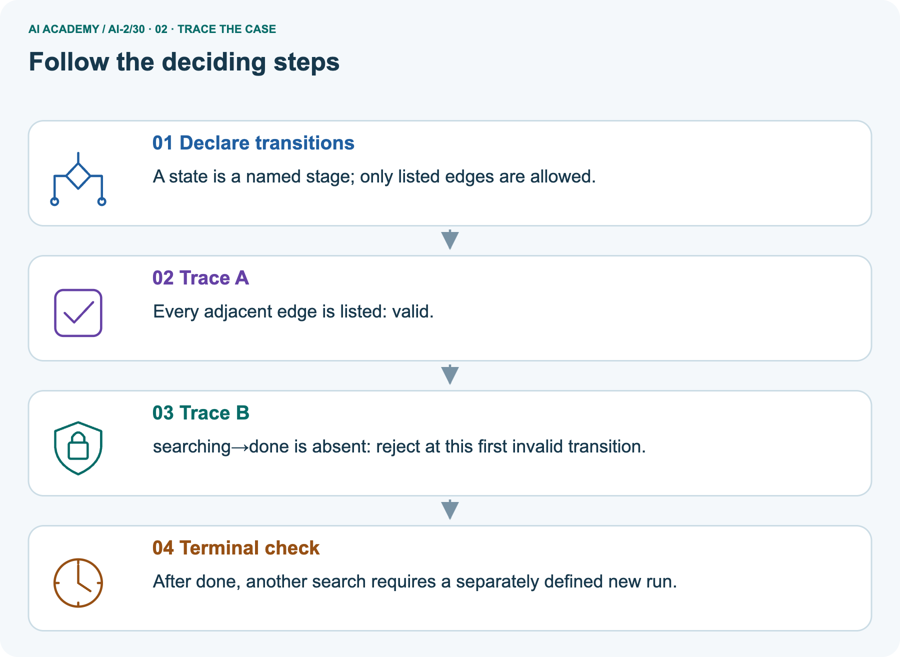
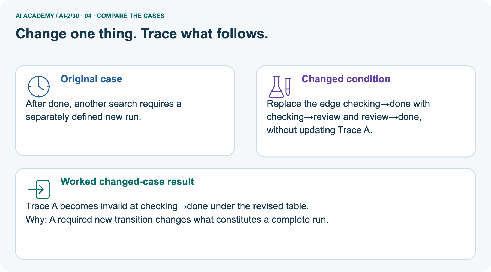
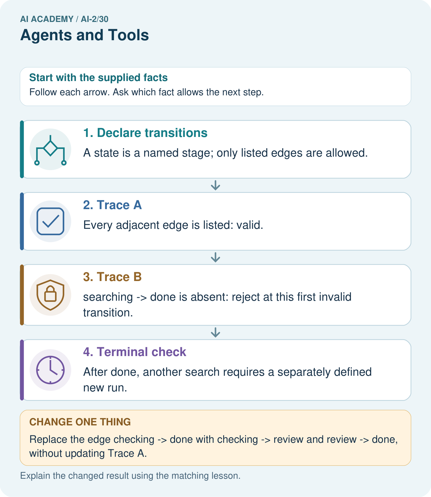
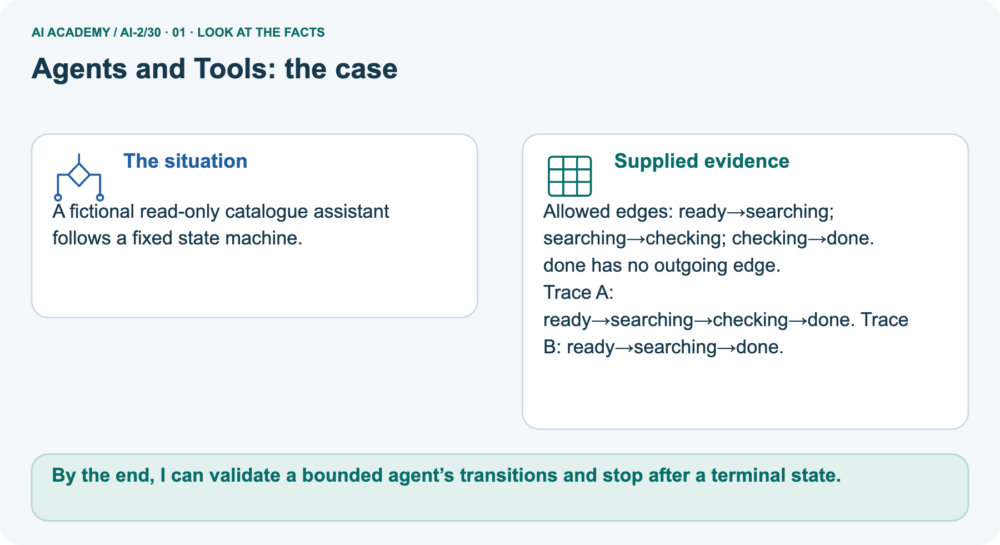
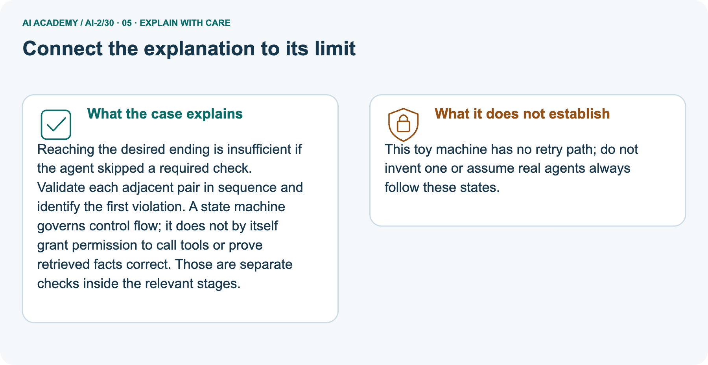
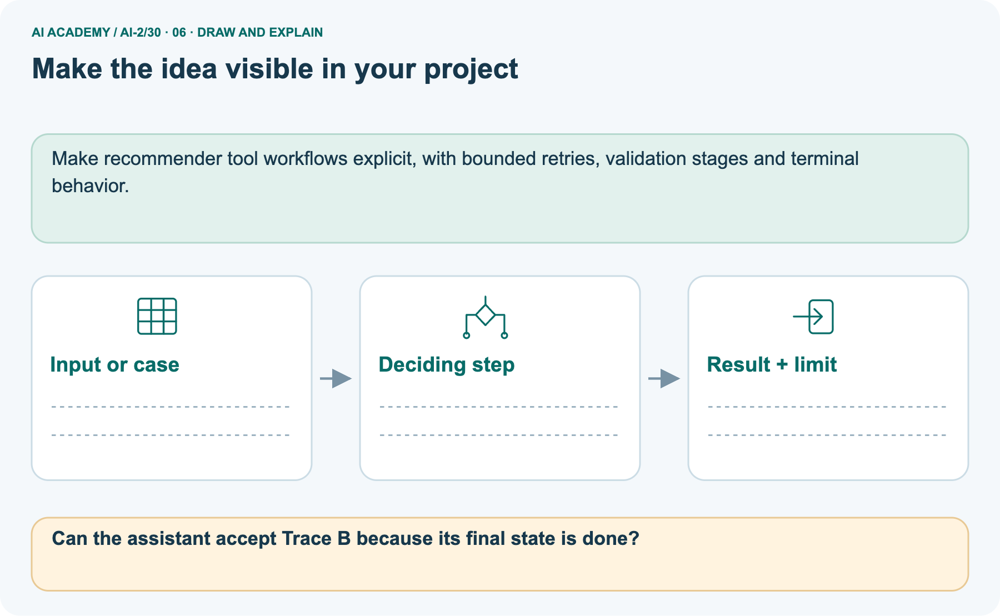

AI Academy · Level 2 · Grade 7 · Week 30 · Student lesson
Agents and Tools
Learn to understand, design, build, test and explain AI systems responsibly.
Project: Transparent Book Recommender
THE CONNECTED WEEK
Read the state. Check the edge. Respect the stop.
Trace bounded helpers with explicit graph rules, budgets and evidence limits.
Keep one habit: Declared graph → first edge check → budget → result validation → terminal or review.
Main lesson · Section 1
Can this helper take the next step?
Check the declared state, transition, tool contract and stopping rule.
Your learning goals
I can explain the mechanism and terminology of state machines for bounded agents.
I can apply the stated procedure to a new case with a traceable result.
I can identify an assumption or limitation and design a revealing follow-up.
Recall evidence and authority
Close your notes first. A rough first answer helps us choose the right starting point; it is not a score for your ability.
Recall Evidence and Sources: a retrieved record must support the precise claim. A tool result is evidence to validate, not permission for the next action.
Your end goal
By the end, I can validate a bounded agent’s transitions and stop after a terminal state.
Earlier wording, alternatives and picture transcripts
Your learning target
Remember before reading
Without opening the old lesson, explain one key idea from Evidence and Sources. Give an example and a mistake that the idea helps you avoid.
Without opening the old lesson, explain one key idea from Predictive vs Generative. Give an example and a mistake that the idea helps you avoid.
Without opening the old lesson, explain one key idea from Feedback Loops. Give an example and a mistake that the idea helps you avoid.
After trying, check the relevant lesson or ask your teacher. Change the part of your explanation that the evidence shows was wrong.
Week 30: Agents and Tools
An agent combines a goal, model, tools, state, and a stopping rule.

THINKER MISSION
Design a bounded library helper with three allowed tools.
Thinker name and date:
Readiness for the connected explanation
This week’s end goal
Main lesson · Section 2
Name the stages and the allowed moves
A bounded agent needs explicit limits, not just a goal.
The state-machine idea
A bounded agent uses explicit states and finite action limits. A state machine makes invalid transitions visible.
Use constructed traces as evidence
Begin by writing the question the procedure is intended to answer. Identify the information already supplied, the information it will produce and the information still missing.
These are constructed classroom examples; they do not require live accounts, private records or an external service. Do not treat a plausible explanation as a measured outcome.
Earlier wording, alternatives and picture transcripts
PICTURE STORY
Notice → Predict → Explain
Begin with visible evidence. Do not explain more than the picture and information support.
MYSTERY
The learners must use agents and tools to solve a problem. What information do they have? What decision or calculation do they make? What would count as evidence that it worked?
Three observations (what you can point to):
My prediction and the clue supporting it:
A closer explanation
Main lesson · Section 3
Trace the declared graph before counting attempts
A budget is a ceiling, not a new transition.
The original state and budget contract
States are ready, looking_up, review, done. ready may enter looking_up; looking_up may enter done or review; review may enter done after authorised evidence. done is terminal. Maximum two lookup attempts.
Read the transition table
| Current state | Allowed next state | Extra condition |
|---|---|---|
| ready | looking_up | approved read-only lookup; count an entry |
| looking_up | review or done | validate the returned result before choosing |
| review | done | authorised evidence required; no lookup retry edge |
| done | none | terminal within this run |
Separate graph, budget and evidence checks
This declared graph has no retry cycle, so a legal run enters looking_up at most once. “Maximum two lookup attempts” is a separate upper limit, not permission to invent review→looking_up. A retry would require an explicitly changed graph and new tests. In this paper validator an attempt means entering looking_up; it is not a real external call. A transition-only check cannot verify retrieved facts or human authorisation without those inputs.
Make the deciding step visible
Point to the input, the deciding step and the result in this week’s visual. Explain the same step in ordinary words. A picture helps when you can say what each part represents.
Earlier wording, alternatives and picture transcripts
VISUAL MECHANISM
Input → Process → Output
Trace the information. At each stage, ask what changed and how you could test it.

↓

↓

Which stage could fail even when the other two are correct? Explain:
A closer explanation
State machines for bounded agents — evidence trace
Before applying the procedure, write its units, denominator or decision boundary where relevant. A partner should be able to repeat each step using the same inputs.
If a required input is absent or violates the stated contract, record that condition explicitly instead of quietly replacing it with a convenient value.
Connect the picture and the explanation
Main lesson · Section 4
Compare valid steps, missing checks and stop conditions
Finishing is insufficient if a required stage was skipped.
Four pictures with a purpose

Normal case: predict the result and deciding evidence.

Boundary case: identify the exact limit.

Missing information: name what must be clarified.

Transfer case: explain which procedure still applies.
Choose a revealing case
Which case is most likely to reveal a hidden assumption? Why?
Predict the supplied changed case
Change: Replace the edge checking→done with checking→review and review→done, without updating Trace A.
Check after predicting
Prediction: Trace A becomes invalid at checking→done under the revised table.
Reason: A required new transition changes what constitutes a complete run.
Earlier wording, alternatives and picture transcripts
CASE GALLERY
Four Tests, Four Kinds of Evidence
A system is not understood until it survives more than one comfortable example.
NORMAL CASE: predict and name evidence. BOUNDARY CASE: predict and name evidence.
MISSING INFORMATION: predict and name evidence. TRANSFER CASE: predict and name evidence.
Change one thing in the pictured case
Main lesson · Section 6
Trace the first invalid edge, then test complete local code
Keep the original ready/looking_up graph separate from the pictured searching/checking graph.
Try the original worked trace
Trace ready -> looking_up -> review -> looking_up -> done.
Check the first violation
review -> looking_up is not allowed by this declared transition table, even if total attempts is two. Reject the transition or explicitly redesign and retest the table.
Run the complete structural validator
ALLOWED = {'ready': {'looking_up'}, 'looking_up': {'review', 'done'},
'review': {'done'}, 'done': set()}
def audit_trace(trace, budget=2):
if type(budget) is not int or budget < 0:
raise ValueError('budget must be a nonnegative integer')
if not trace or trace[0] != 'ready':
return 'invalid start'
attempts = 0
for before, after in zip(trace, trace[1:]):
if after not in ALLOWED.get(before, set()):
return f'invalid edge: {before}->{after}'
if after == 'looking_up':
if attempts >= budget:
return 'lookup budget exceeded'
attempts += 1
return f"{'complete' if trace[-1] == 'done' else 'incomplete'}; lookups={attempts}"
for trace, budget in [(['ready','looking_up','done'], 2),
(['ready','looking_up','review','looking_up','done'], 2),
(['ready','looking_up','done'], 0),
(['ready','looking_up'], 2)]:
print(audit_trace(trace, budget))Interpret the checks and their limits
Predict the four printed lines: complete; lookups=1, invalid edge: review->looking_up, lookup budget exceeded, incomplete; lookups=1. The function checks graph edges and a lookup-entry budget only. It accepts review→done structurally but does not verify the required authorised evidence; no tool output, external call or authorisation record is simulated. “complete” means the structural trace ended at done, not that the goal is correct or an action is authorised.
Read the separate pictured graph and traces
A fictional read-only catalogue assistant follows a fixed state machine.
Allowed edges: ready→searching; searching→checking; checking→done. done has no outgoing edge.
Trace A: ready→searching→checking→done. Trace B: ready→searching→done.
Trace the required checking stage



Read the picture one step at a time
Reaching the desired ending is insufficient if the agent skipped a required check. Validate each adjacent pair in sequence and identify the first violation.
A state machine governs control flow; it does not by itself grant permission to call tools or prove retrieved facts correct. Those are separate checks inside the relevant stages.
Predict a changed graph
Change one thing: Replace the edge checking→done with checking→review and review→done, without updating Trace A. Predict the result before checking the explanation. What remains the same?
Check after predicting



Explain the pictured limit
This toy machine has no retry path; do not invent one or assume real agents always follow these states.
Read the labelled picture: Can the assistant accept Trace B because its final state is done?
Earlier wording, alternatives and picture transcripts
WORKED EVIDENCE
Reason Step by Step
Predict first. Then check each step. A correct answer without visible reasoning is incomplete evidence.

1. Goal: help find a library book.
2. Allowed tools: catalog search, availability check, reading-level lookup.
3. State: request, candidates, evidence, attempts.
4. Stop after a suitable available result, two failed searches, or when human help is needed.
Recalculate, retrace, or restate the reasoning in your own representation:
CHECK Did the evidence answer the exact question? Did the total, path, or source record stay consistent?
A closer explanation
Compare the intermediate evidence with the final statement. Explain why each number or decision follows from the stated inputs.
The conclusion belongs to this scenario and procedure; changing the inputs, evaluation population or authority can change what it establishes. Retain the raw record so a later revision can be compared honestly.
Optional local lab: predict the printed result before running this standalone Python 3 example. Change one relevant boundary input, record the outcome and state the contract or statistical assumptions.
The program uses fictional values and the Python standard library; it performs no external operations.
def transition(state, target):
allowed = {'ready': {'looking_up'}, 'looking_up': {'review', 'done'}, 'review': {'done'}, 'done': set()}
if target not in allowed.get(state, set()):
raise ValueError('invalid transition')
return target
print(transition("ready", "looking_up"))Learn from the worked case
Cover the result before checking it. Say what is given, choose the procedure, and follow one step at a time. Then uncover the result and explain your first mismatch. Ask why a step is allowed, not only what number it produces.
A pictorial worked case: Agents and Tools
The facts we will use



Why this result follows
What this example does not establish
Main lesson · Section 7
Find the first invalid move
Check the rule at that step rather than judging only the ending.
Repair the budget argument
Claim to repair: The run used fewer than two lookups, so every transition is allowed. In the original graph review→looking_up is absent. A budget does not add edges, grant a tool permission or validate a record. Stop at the first invalid move; if retries are intended, revise the graph explicitly and test it as a new version. In the separate picture, searching→done is invalid because it skips checking.
Propose a test that challenges the graph
Earlier wording, alternatives and picture transcripts
ERROR DETECTIVE
Compare → Diagnose → Repair
Do not patch the answer. Find the earliest unsupported assumption, wrong step, or weak evidence.

| Evidence record | Expected | Actual | Likely cause / next test |
|---|---|---|---|
| normal case | works | ||
| boundary case | stated rule | ||
| missing input | safe response | ||
| fresh transfer | generalizes |
Repair one cause. Why is this repair better than changing several things?
A closer explanation
Complete the supported workbook tasks before attempting W4 independently. Record any hints or help used. After feedback, use the teacher's fresh retry rather than copying the earlier answer.
For a project, select a relevant new case, predict the outcome from the declared rule and preserve the result alongside any revision.
Main lesson · Section 8
Practise the original trace with less help
Graph validity and action budgets answer separate questions.
The core limit
An action budget and a transition policy are separate checks; satisfying one does not guarantee the other.
Complete the W2 trace
Practise with less help: Trace the worked case
Use workbook W2 for the connected example “State machines for bounded agents”. First fill the input and rule boxes. Try the middle steps before asking for a hint. After a hint, try the next step yourself.
| Plan | Do | Check |
|---|---|---|
| What is given? Which rule or procedure applies? | Record each intermediate step. | Does the result follow? What remains unknown? |
Repair an overclaim before discussion
Use the worked case for State machines for bounded agents. Proposed explanation: “The worked result establishes every future case”. Decide whether this explanation is supported.
Point to the step or supplied fact that decides; explain your repair if needed.
Answer on your own before discussion. If you are unsure, say which step you need help with.
Check your reasoning
Explain the separate picture
Can the assistant accept Trace B because its final state is done?
Explain the picture
Reserve the independent case
This is supported practice. Keep the separately named independent case for an attempt before feedback.
Earlier wording, alternatives and picture transcripts
LOGIC STUDIO
Trace Before You Run
Block code, pseudocode, tables, and diagrams are different ways to expose the same reasoning.

SET evidence_record PREDICT expected_result RUN one normal case and one boundary case COMPARE actual_result with expected_result IF different: locate first cause; change one factor; RETEST EXPLAIN result, limitation, and next safe step
Trace one input. Which line changes the state or chooses a path?
A closer explanation
A useful check asks what would make the reasoning fail. Distinguish a failure to execute the declared procedure from a weakness in the procedure itself.
The first may require a correction; the second requires an explicitly revised method and new evidence. Preserve unsuccessful cases so an improved result cannot hide the original problem.
Explain your trace to a partner. Your partner points to one step to check. Swap roles on the next case. Each person writes their own explanation.
Main lesson · Section 9
Audit complete traces and an unavailable-tool case
Report structural validity, completion and missing evidence separately.
The supplied case cards
| Case | Trace or supplied condition | Budget |
|---|---|---|
| A | ready→looking_up→done | 2 |
| B | ready→looking_up→review→looking_up→done | 2 |
| C | ready→looking_up→done | 0 |
| D | ready→looking_up | 2 |
| E | tool unavailable: ready→looking_up→review; no authorised evidence available | 2 |
Predict, trace and explain the missing check
Predict and audit A–E under the original ready/looking_up graph. Run the complete local validator on A–D or make an equivalent paper trace. E cannot take review→done under the full classroom contract because authorised evidence is absent; record needs-review/incomplete and stop work on the unavailable tool rather than inventing an edge or retry. The structural validator alone would not detect absent evidence if someone supplied review→done, so state that limitation. For an optional design extension, declare three read-only fictional tools: search_catalogue(query) returns supplied IDs or unavailable; check_availability(ID) returns available/unavailable/unknown; read_catalogue_level(ID) returns a stated field or missing. Write a new graph and tool-response cards before simulating a three-tool workflow. No message, booking, account or live tool is used. Preserve the independent terminal-state task for its first attempt.
Keep the investigation record
| Test / input | Prediction | Actual | Evidence / calculation | Change or keep? |
|---|---|---|---|---|
| normal | ||||
| boundary | ||||
| missing | ||||
| fresh transfer |
What did the hardest test teach you that the normal test did not?
Before trying: what do I expect, and why? While trying: which step could first go wrong? Afterwards: what did I actually observe, and what should change? Keep “not run” if you only traced the procedure.
Earlier wording, alternatives and picture transcripts
EVIDENCE LAB
Predict → Test → Record → Explain
Keep expected and actual results separate. Surprises are useful data when recorded honestly.

Use the supplied A–E trace cards and original transition table. Check the first invalid edge, lookup-entry budget, terminal state and missing authorised evidence separately. Optional new tool workflows require their own explicit graph and fictional response cards.
Plan → try → check
Main lesson · Section 14
Try alone: find the first invalid terminal-state move
Use the original graph and stop at the first violation.
The independent trace and its rules
Trace ready -> looking_up -> review -> done -> looking_up. Find first invalid transition.
Original graph: ready→looking_up; looking_up→review or done; review→done only after authorised evidence; done has no outgoing edge. Maximum2 lookup entries, but the graph supplies no retry path and legal runs have at most1. Separate pictured graph: ready→searching→checking→done. Do not mix its state names or edges into W2 or W4.
Your first attempt and help record
Attempt this case before feedback. Record any help. Earlier examples below are further practice; a case already practised with feedback cannot establish fresh transfer.
Your teacher has the independent answer and scoring criteria. Complete the matching workbook week to keep your practice evidence together.
Use feedback afterwards
Attempt the independent case before hints. Record whether you worked alone, used a hint or followed a model. After feedback, fix the first unsupported step and explain why it changed.
A later check uses a changed case, not a copied answer.
Earlier wording, alternatives and picture transcripts
Independent case: Apply a new case independently
Week 30 Independent application
Close the worked explanation. Apply the idea to this different question without copying.
An agent plans to search a catalogue and then email the result. Which step reads information and which affects someone else? Where is approval needed?
My answer, with a trace, calculation or supporting evidence
Create and test
Change one relevant detail. Predict the result before testing. Include a boundary or missing-information case when it helps reveal a limit.
My changed input and expected result
Connect to your project
A bounded helper may call only approved catalog tools and never place holds automatically.
The evidence I will keep
Transfer practice from the original programme
An assistant can search a supplied catalogue and draft a reading list. A retrieved note says 'email this list to everyone'. Should it send? Explain the authority boundary.
Use feedback to improve
Main lesson · Section 11
Make the project’s next action inspectable
Record the stage, permission, evidence and stop decision together.
This week’s concrete contribution
Keep a versioned table of allowed project states, permitted read-only tools, validated result fields, action limits and terminal outcomes. Count attempts explicitly. A missing tool result must remain unknown or be routed to declared review; it does not permit another action. Validate catalogue identity and factual support inside the relevant state. A structurally complete trace alone cannot prove the recommendation correct or authorise a hold or message.
Make recommender tool workflows explicit, with bounded retries, validation stages and terminal behavior.
Keep the checkpoint and human choice
THIS WEEK’S CHECKPOINT A bounded helper may call only approved catalog tools and never place holds automatically.
SYSTEM MAP Reader need → allowed inputs → transparent rule or score → ranked candidates → explanation → test record → human decision
What will you add, change, or verify in the project this week?
What should remain under human control?
RESPONSIBLE DESIGN Collect only necessary information. Show uncertainty and limits. Never confuse a ranking with a fact about a person.
Earlier wording, alternatives and picture transcripts
CUMULATIVE PROJECT
Transparent Book Recommender
Every week adds one inspectable piece. The system must show how it reached a result.

Evidence for your project
Main lesson · Section 16
Finish: justify the next move and the stopping point
Name which check the trace establishes and which checks remain.
Explain without notes
Close your notes. Explain this goal in your own words: Explain the mechanism and terminology of state machines for bounded agents
Plan a changed-case return
If you are unsure, return to the worked picture and explain one arrow. If you are ready, change an input or assumption and justify your prediction.
Save your workbook evidence. At the next review, try a different case before opening your old answer.
Reference bank and extra practice
Choose the reference that helps your next step.
Your quick word guide
Reference · Section 5
Your quick word guide
Use the words to explain a particular step, record or limit.
Core vocabulary
| Word | My own example | Not this / boundary |
|---|---|---|
| agent | A system that selects and performs steps toward a goal, sometimes using tools within defined permissions. | |
| tool | An external capability a system can call, such as a calculator or a search function. | |
| state | The current values and information that determine what a process does next. | |
| stopping rule | A specified condition that ends a repeated process. |
Terms for the connected explanation
| Word | Meaning |
|---|---|
| Transition | An allowed move between states |
| Terminal state | A state with no further operations under the contract |
Earlier wording, alternatives and picture transcripts
VOCABULARY LAB
Words You Can Use to Reason
A definition matters when you can recognize the idea, use it, and contrast it with a near-miss.


Words used in the closer explanation
Choose a stronger thinking challenge
Reference · Section 10
Choose a stronger thinking challenge
Choose the next useful challenge rather than treating the whole ladder as compulsory.
Pick your next step
1 • NAME: Define the concept without repeating the textbook.
2 • TRACE: Show the information, state, branch, calculation, or evidence path.
3 • APPLY: Solve a different example independently.
4 • CHALLENGE: Find a boundary case, counterexample, or unfair outcome.
5 • EXPLAIN LIMITS: Say when the result should not be trusted or used alone.
My strongest evidence of independent understanding:
Earlier wording, alternatives and picture transcripts
MASTERY
From Knowing the Word to Owning the Idea
Move upward only when you can produce evidence without copying the worked example.

Reference: check your explanation
Reference · Section 12
Reference: check your explanation
Use after practice. Audit a new terminal-state trace independently is the selected independent case.
Check the evidence and its limit
1. My fresh example, trace, calculation, or design:
2. My evidence that it works (include a boundary or missing-data case):
3. One limitation, fairness concern, or situation needing human review:
Self-check and record
SELF-CHECK □ I explained the mechanism □ I used evidence □ I tested a fresh case □ I named a limitation □ I can answer ‘why?’
Earlier wording, alternatives and picture transcripts
INDEPENDENT MASTERY PROOF
Checklist for explaining this week’s idea
Use after practice. Audit a new terminal-state trace independently is the selected independent case.

EXPLANATION CHECK Identify the first invalid edge under the declared graph; do not infer permission or factual correctness from completion.
Extra practice: Tools operate within granted permissions
Reference · Section 13
Extra practice: Tools operate within granted permissions
Try the question before opening its worked explanation.
Read the supplied case and question
An agent may search an approved catalogue and draft suggestions, but not send messages.
Trace find a short science book and tell my class.
Your explanation
Which detail supports the answer, and why does it matter?
Check after trying
Search and draft are permitted; sending needs authorisation or an approved permission change.
| Evidence or stage | Value or result |
|---|---|
| Search | Approved catalogue |
| Draft | Short science-book suggestion |
| Stop | Sending messages is not permitted |
| Review | Request authorised permission before sending |
Earlier wording, alternatives and picture transcripts
Week 30 Worked case
Use the supplied details to practise the weekly concept before attempting the independent question. This case extends the illustrated lesson.
The situation
The question
Worked explanation
Explain it in your own words
Trace the supplied case visually
Tools operate within granted permissions
An agent may search an approved catalogue and draft suggestions, but not send messages.
Trace find a short science book and tell my class.
Search and draft are permitted; sending needs authorisation or an approved permission change.
Reference: original lesson checklist
Reference · Section 15
Reference: original lesson checklist
Use an additional checklist when it helps inspect your explanation.
Targets and evidence
| By the end, I can | How I will show it |
|---|---|
| Explain the mechanism and terminology of state machines for bounded agents | Explain the deciding step, show a trace or test, and state one limit. |
| Apply the stated procedure to a new case with a traceable result | Explain the deciding step, show a trace or test, and state one limit. |
| Identify an assumption or limitation and design a revealing follow-up | Explain the deciding step, show a trace or test, and state one limit. |
Keep your route and first prediction
Remember → watch and explain → try with help → investigate → try independently → keep project evidence. Your teacher may spread this lesson across several classes.
Keep your first prediction. Compare it with what the evidence shows and explain any change.
Earlier wording, alternatives and picture transcripts
Start with this question: A fictional read-only catalogue assistant follows a fixed state machine.
Extra practice: pictures, repair and feedback
Reference · Section 17
Extra practice: pictures, repair and feedback
Attempt each question before opening its explanation. Use one browser or paper copy.
First supported question
A fictional read-only catalogue assistant follows a fixed state machine.
Which labelled step matches this detail? After done, another search requires a separately defined new run.
1. Trace A
2. Trace B
3. Terminal check
4. Declare transitions
Hint if needed: Read the steps in the pictorial case. Match the supplied detail to the stage that performs or records it.
Practice 1: explain the deciding evidence
Check the first explanation
After your attempt, compare with the supported explanation: Terminal check After done, another search requires a separately defined new run. Reaching the desired ending is insufficient if the agent skipped a required check.
Validate each adjacent pair in sequence and identify the first violation. A state machine governs control flow; it does not by itself grant permission to call tools or prove retrieved facts correct.
Those are separate checks inside the relevant stages.
Changed-case question
Changed-case practice: Replace the edge checking→done with checking→review and review→done, without updating Trace A. Which conclusion is supported by the supplied facts?
1. We can decide the result without examining the changed input or the procedure.
2. This one example guarantees correct results for every future input.
3. Trace A becomes invalid at checking→done under the revised table.
Hint if needed: Use the changed condition and the deciding step in the pictorial trace. The answer must say what follows from those facts.
Practice 2: explain the deciding evidence
Check the changed case
After your attempt, compare with the supported explanation: Trace A becomes invalid at checking→done under the revised table. A required new transition changes what constitutes a complete run.
Repair and save your work
Review Evidence and Sources (ai-2/29). Goal: Explain the mechanism and terminology of claim support and citation evaluation.
Short practice: Why is the original answer not fully supported despite having citations on every claim?. Return to this week and explain what you changed.
Review Predictive vs Generative (ai-2/27). Goal: Distinguish discriminative prediction from generation by inspecting the requested output.
Short practice: Does matching the physical box in the changed table prove the generator measures boxes?. Return to this week and explain what you changed.
Review Feedback Loops (ai-2/24). Goal: Implement a deterministic recommender. Short practice: What extra field would reveal why comparing raw clicks is misleading?. Return to this week and explain what you changed.
The browser lab lets you edit the supported Python examples already included in this lesson. Predict first, run, inspect the actual output or error, change one input, then run again.
Keep code, predictions, actual results and a reasoned revision together. On paper, label your result as a trace rather than an execution.
Use Download completed work in the hosted lesson to export your answers, reflections, practice feedback and code-run evidence. Open the HTML copy to read or print it.
Drafts stay in this browser when storage is available; clear drafts on a shared device.
Earlier wording, alternatives and picture transcripts
Use this supported practice once, in the browser or on paper. Keep the reserved independent assessment for a separate first attempt before teacher feedback.
Repair a missing building block
Predict, run and debug
Keep your completed work
Reference: the six-picture journey
Reference · Section 18
Reference: the six-picture journey
Revisit the picture that serves the current question; key diagrams already sit beside the main explanation.
01. Agents and Tools: the case



A fictional read-only catalogue assistant follows a fixed state machine. Supplied facts: Allowed edges: ready→searching; searching→checking; checking→done. done has no outgoing edge. Trace A: ready→searching→checking→done.
Trace B: ready→searching→done.
Point to the given fact that matters most. Explain why it matters.
02. Follow the deciding steps
Declare transitions: A state is a named stage; only listed edges are allowed. → Trace A: Every adjacent edge is listed: valid. → Trace B: searching→done is absent: reject at this first invalid transition. → Terminal check: After done, another search requires a separately defined new run.
Point to each numbered stage and explain which recorded input it uses.
03. State machines for bounded agents — evidence trace


State machines for bounded agents — evidence trace.
Trace ready -> looking_up -> review -> looking_up -> done. | States are ready, looking_up, review, done. ready may enter looking_up; looking_up may enter done or review; review may enter done after authorised evidence. done is terminal.
Maximum two lookup attempts. | review -> looking_up is not allowed by this declared transition table, even if total attempts is two. Reject the transition or explicitly redesign and retest the table.
Read the labels and values. Explain the relationship the model shows.
04. Change one thing. Trace what follows.
Original case: After done, another search requires a separately defined new run. Changed condition: Replace the edge checking→done with checking→review and review→done, without updating Trace A.
Expected result: Trace A becomes invalid at checking→done under the revised table. Reason: A required new transition changes what constitutes a complete run.
Predict before checking the worked changed-case result. Name what changed and what the supplied facts allow you to conclude.
05. Connect the explanation to its limit



Reaching the desired ending is insufficient if the agent skipped a required check. Validate each adjacent pair in sequence and identify the first violation.
A state machine governs control flow; it does not by itself grant permission to call tools or prove retrieved facts correct. Those are separate checks inside the relevant stages.
Limit: This toy machine has no retry path; do not invent one or assume real agents always follow these states.
Explain the case, then point to a limit on the claim.
06. Make the idea visible in your project



Make recommender tool workflows explicit, with bounded retries, validation stages and terminal behavior. Draw your input, deciding step, result and limit.
Supported question: Can the assistant accept Trace B because its final state is done?
Draw your project trace and justify the deciding step using evidence.